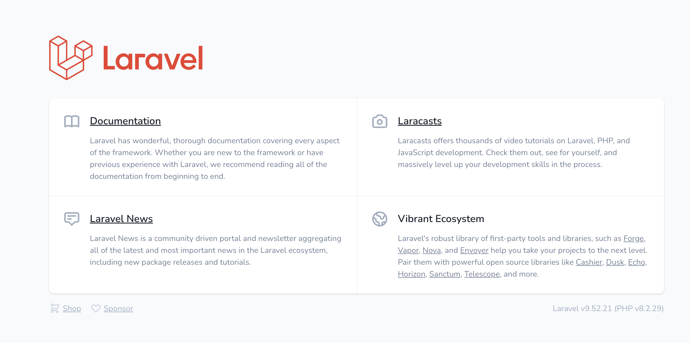
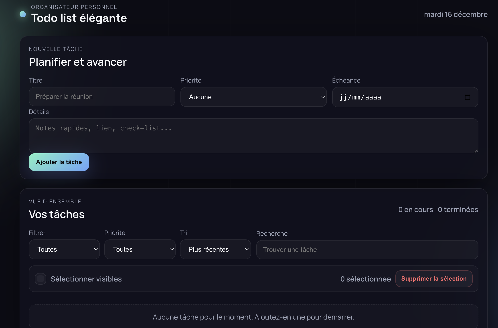
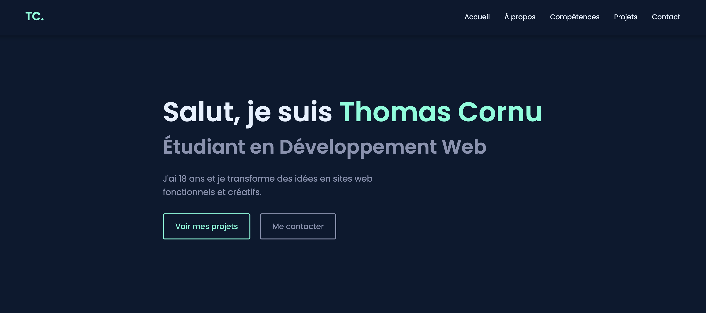

J'ai 18 ans et je transforme des idées en sites web fonctionnels et créatifs.
Voir mes projets Me contacterPassionné par le numérique depuis mon plus jeune âge, j'ai décidé de transformer cette passion en métier. Actuellement en formation de développement web, j'apprends chaque jour de nouvelles technologies et je développe mes compétences à travers des projets concrets.
Mon approche du développement se base sur trois piliers : la qualité du code, l'expérience utilisateur et l'apprentissage continu. Je suis curieux, persévérant et j'aime résoudre des problèmes complexes grâce au code.
Toujours à l'écoute des dernières tendances du web, je m'efforce de créer des sites modernes, performants et accessibles.

Architecture multi-applications reliant deux sites Laravel à une base MySQL unique via Docker. Configuration complète avec Nginx, PHP-FPM et gestion des volumes pour la persistance. Démontre ma maîtrise de la conteneurisation et des architectures cloud-native évolutives.

Site web de gestion de tâches avec interface élégante et intuitive. Permet de créer, éditer, filtrer et rechercher des tâches avec une expérience fluide. Utilise LocalStorage pour la persistance des données sans backend, garantissant un fonctionnement offline complet. Design moderne avec système de priorités, dates d'échéance et états personnalisables, optimisé pour mobile et desktop.

Mon premier portfolio professionnel développé from scratch. Design moderne et responsive avec navigation fluide, sections interactives, animations CSS et menu burger pour mobile. Projet qui démontre ma maîtrise des fondamentaux du développement front-end.
Une opportunité ou une question ? N'hésitez pas !